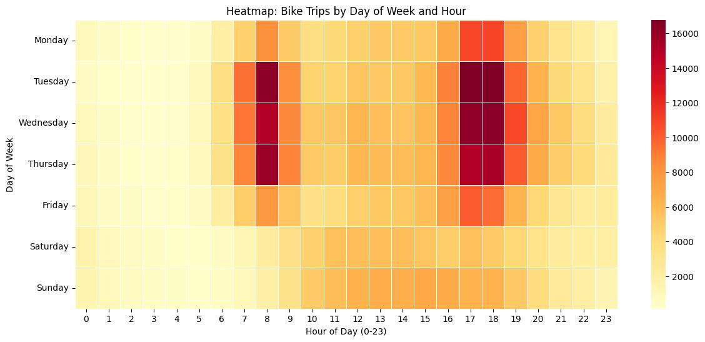

Salil Chand
Analyst
I am a data enthusiast focused on the intersection of business problems and data-driven solutions. With a background in business analytics and a commitment to data integrity, I leverage analytical tools to provide insights into complex problems. I aspire to use Geospatial data to inform sustainability efforts, promoting health for humans and ecology.

Interests
- Analysis and Visualization: Using tools to analyze data, find patterns and visualize insights.
- Research: Using quantitative and qualitative methods to gather data from surveys or perform market research.
- Tools: SQL, BigQuery, dbt, and Python.
- Hobbies: Hiking, bikes, reading fictional novels and cooking food.
- Community: Volunteering as a bicycle mechanic.
Projects
London Weather Analysis (1979-2023)
- Focus: Analyzing 44 years of historical climate data to track long-term temperature shifts and the frequency of extreme weather events.
- Methodology:
- Preprocessed and scaled Kaggle dataset variables (Maximum, Minimum, Mean Temps, and Precipitation).
- Applied iterative statistical methods (Static Thresholds, 75th Percentile Quartiles, and +2/+3 Standard Deviations) to dynamically define extreme events.
- Calculated linear trendlines and Kernel Density Estimates (KDE) to model historical distributions.
- Libraries Used: Pandas NumPy Matplotlib/Seaborn
- Results: Quantified historical climate shifts and visualized the statistical rarity of extreme heat and rainfall using comprehensive distribution mapping.

Exploratory Data Analysis: London Bike Share Dataset
Hypothesis: A small number of specific station-to-station routes account for a disproportionately high volume of daily commuter traffic.
Overview: Conducted exploratory data analysis on a public dataset to uncover commuting patterns. Visualized station-to-station traffic, and analyzed trip duration distributions using heatmaps and bar charts.
Result: Visualizations confirmed that ridership is heavily concentrated on a few key paths. These insights can help inform targeted bike redistribution strategies to improve urban mobility and environmental sustainability.
